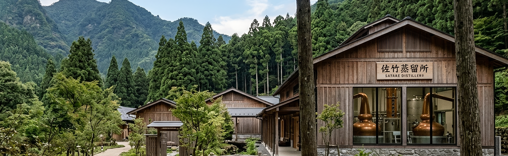
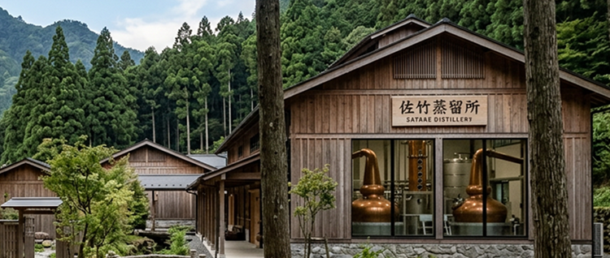


移動に約15分ほど要します。
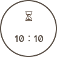
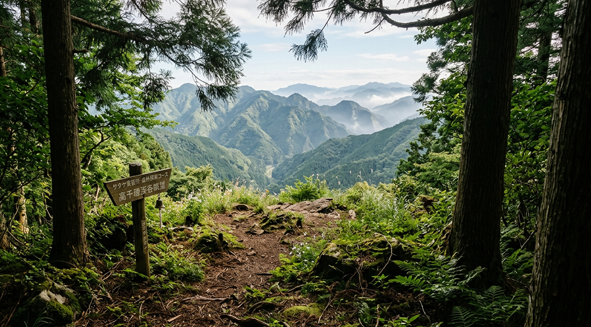
旅先だからこそ、予定を詰め込まず、自然の中でゆっくりと過ごしてみませんか。 高千穂の澄んだ空気に包まれながら森を歩き、木漏れ日や鳥のさえずりに耳を傾ける時間。忙しい日常では気づけなかった心地よさが、少しずつ心と体をほぐしてくれます。 観光を楽しむだけでは終わらない、この土地だからこそ味わえる静かなひとときが、旅の思い出をより豊かなものにしてくれるはずです。
移動
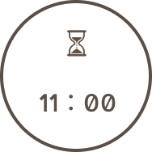
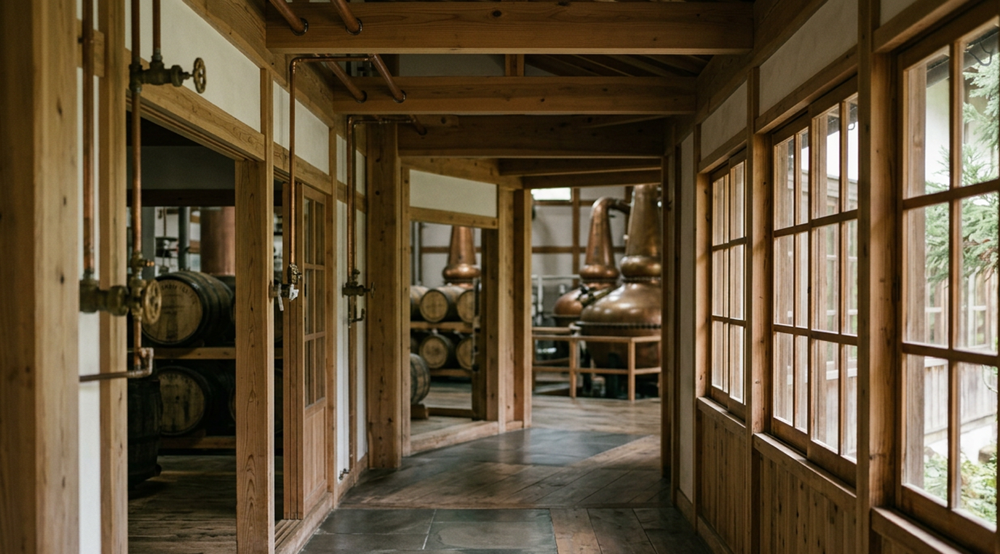
ウイスキーづくりに欠かせない麦芽や仕込み水をご覧いただけます。
高千穂の自然がどのようにウイスキーへ活かされているのか、展示を通して知ることができます。
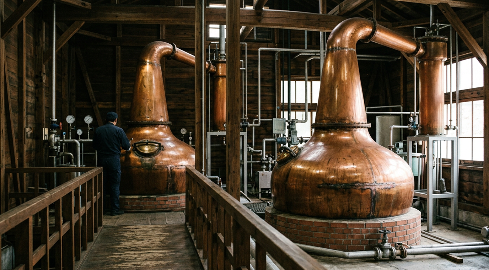
銅製ポットスチルなど、蒸溜所ならではの設備をご覧いただきます。
香りが生まれる工程や職人のこだわりを知ることで、一杯のウイスキーへの理解が深まります。
移動
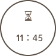
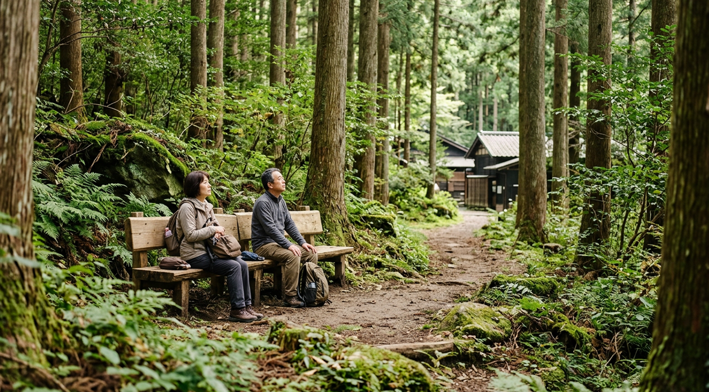
蒸溜所を見学したあとは、高千穂の森で少し休憩。
木々の間を抜ける風や森の音を感じながら、ゆったりとした時間をお過ごしください。
移動
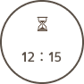
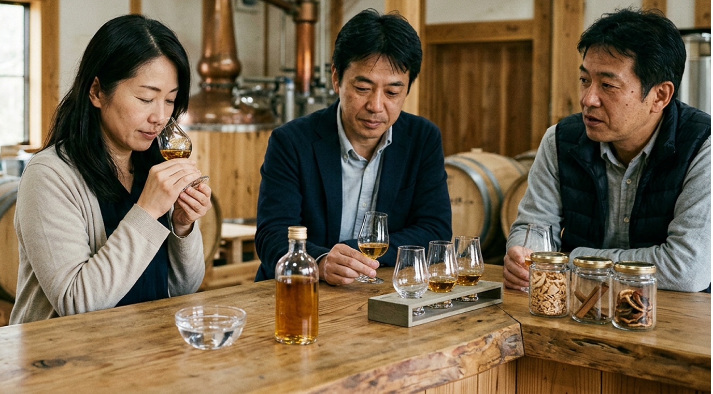
まずはグラスを軽く回し、ゆっくりと香りを感じます。
樽由来の甘い香りや木のニュアンスなど、それぞれの個性をご体感ください。
少量ずつ口に含み、香りや余韻の変化をお楽しみいただきます。
ガイドがおすすめの飲み方や味わい方をご紹介します。
高千穂産チーズとのペアリングを通して、素材同士が引き立て合う味わいをご体験いただけます。
ウイスキーの新たな魅力を発見できる、プレミアムコース限定の時間です。
移動
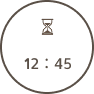
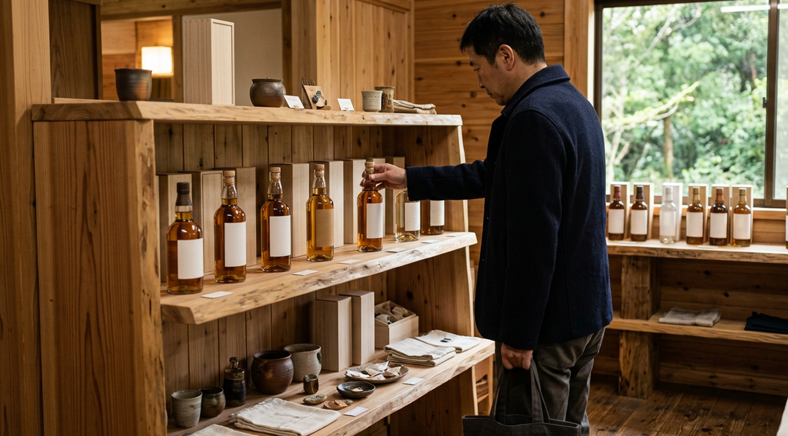
見学の最後は、蒸溜所限定ショップへ。
限定ウイスキーをはじめ、佐竹蒸溜所ならではの商品をお土産としてお選びいただけます。
高千穂の森には、日常ではなかなか出会えない穏やかな時間が流れています。
風が木々を揺らす音や鳥のさえずりに耳を傾けることで、自然と心が落ち着き、忙しい毎日から
少し距離を置くことができます。
森林リトリートは、景色を眺めるだけではなく、自然の中で心を整え、自分らしい時間を過ごせ
ることが魅力です。
森林リトリートをより快適に過ごせる施設をご用意しています。
展望デッキ・森のカフェ・ハンモックなど、
佐竹蒸溜所ならではの空間をご覧ください。